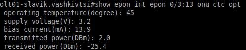
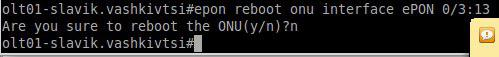

Перевірка лінка по оптоволокну
Команди telnet, ena 2, show mac add
В терміналі набрати команду telnet, через пробіл вказати ІР до оптичного лінійного термінала (як параметр) і натиснути "Enter". Далі ввести ім'я користувача і пароль.Після успішного входу в систему набрати команду ena 2 (в більшості випадків після цього треба ввести пароль, що дозволяє виконати цю привілейовану команду).
Для перевірки зв'язку між провайдером і пристроєм клієнта можна скористатись командою show mac add.
Через пробіл ввести фізичну адресу клієнтського пристрою у форматі "ec08.6b39.63a9".
Відповідь, показана на відео відповідає ситуації, коли немає зв'язку по оптиці.
Перевірка лінка по оптиці "Лінк є"
Kомандa show mac add int epon
Параметром виступає номер інтерфейса у форматі 0/1:13Якщо відомо з якого оптичного інтерфейса абонент підключався минуло разу, лінк можна перевірити командою show mac add int epon. Параметром виступає номер інтерфейса у форматі 0/1:13
Перевірка рівня сигнала до конкретного абонентського оптичного термінала
Команда show epon int epon 0/3:13 onu ctc opt

Тут рівень сигнала в нормі!
Перезавантаження оптичного термінала абонента
Команда epon reboot onu interface ePon
Параметром виступає номер інтерфейса у форматі 0/3:13
Короткі відомості про стан підключень до оптичного термінала
Команда show interface brief

Детальні відомості
Команда show epon onu-inf

Список активних абонентських терміналів.
Команда show epon inactive-onu
Список неактивних абонентських терміналів.
Команда show epon active-onu